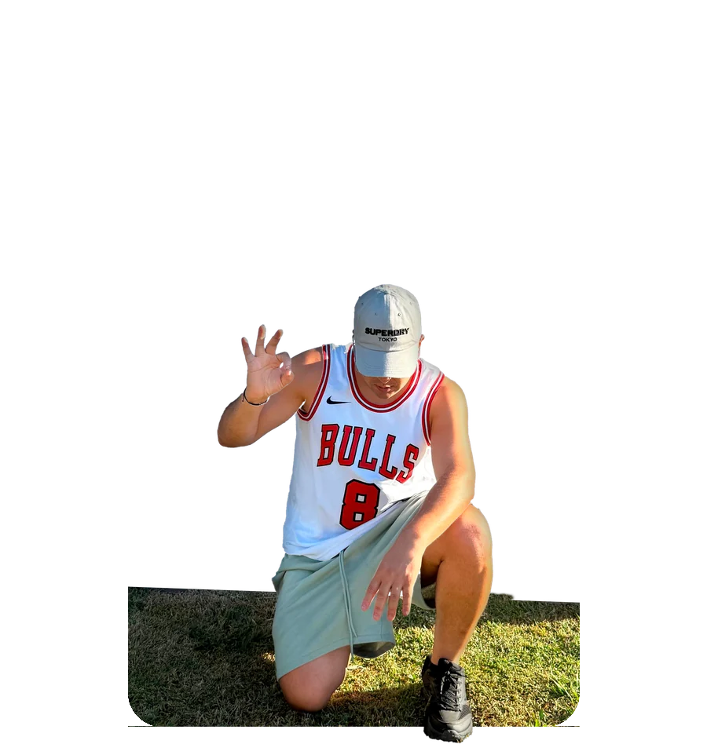

Nombre pendiente
Qué importó / rubro — resultado breve
Sobre mí
— Soy Juan Domínguez
Vengo del comercio desde 2018 y en 2022 arranqué mi propio camino en la importación. Sé exactamente qué frena a un importador primerizo — y cómo evitarlo desde el primer envío.

Con Juan armé mi primer contenedor sin miedo.
01 — A qué me dedico
El comercio me enseñó que la clave no está en casarse con ningún producto, sino en saber exactamente qué está pidiendo la gente. Me dedico a cazar tendencias y productos de alta demanda. Si tenés un artículo en mente, tengo la estructura en China y Paraguay para ponerlo en tu puerta con los mejores precios del mercado.

02 — Cómo funciona
Me contás qué producto tenés en mente y para qué lo necesitás. A partir de ahí, empiezo a buscar proveedores reales que puedan fabricarlo o venderlo al precio y la calidad que estás buscando.
Contacto proveedores, comparo opciones y negocio directamente con ellos para conseguirte el mejor costo posible, sin que tengas que lidiar vos con ese proceso.
Me encargo de todo el trámite: aduana, logística y envío, de principio a fin. Vos no tenés que ocuparte de la parte administrativa ni de los papeles.
Mi trabajo no termina cuando te entrego los productos. Te comparto estrategias y tips comerciales basados en mi experiencia para que rotes ese stock rápido y asegures tu rentabilidad.
03 — Resultados
Nombre pendiente
Qué importó / rubro — resultado breve
Nombre pendiente
Qué importó / rubro — resultado breve
Nombre pendiente
Qué importó / rubro — resultado breve